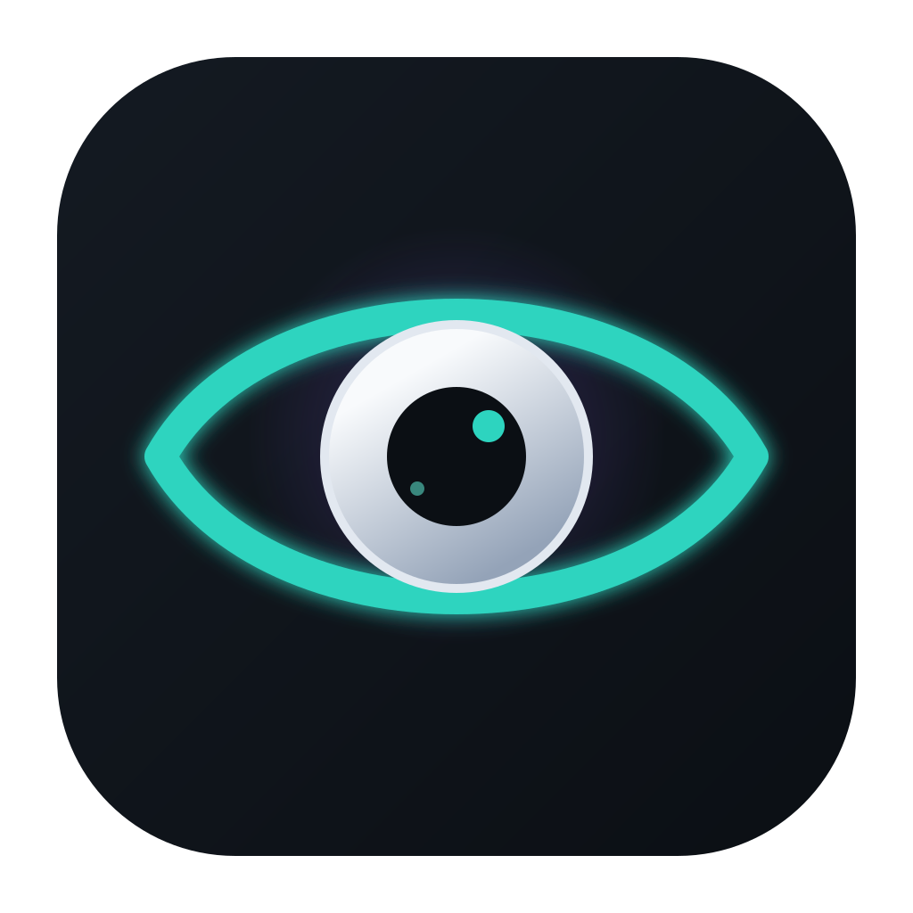
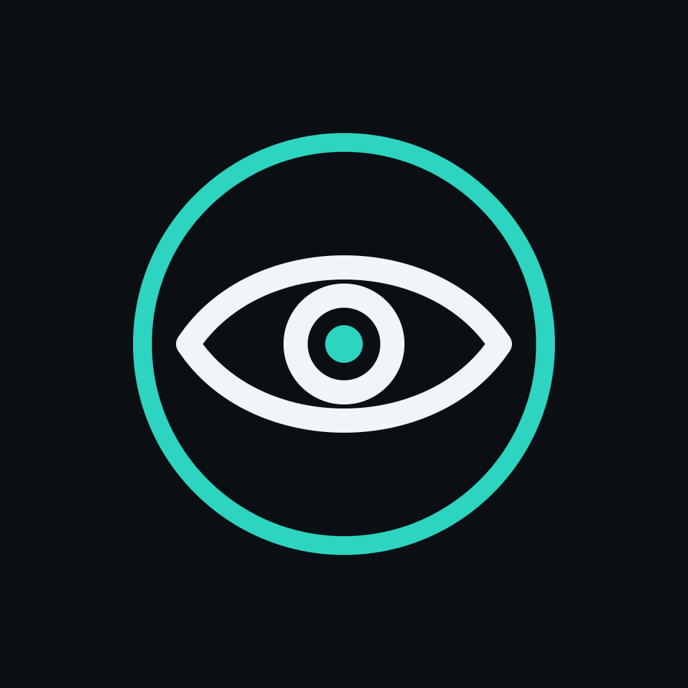

App icon (primary)

File: logo.svg · also logo_app_icon_concept.jpg
Circular mark / tray

File: logo-mark.svg · also logo_circular_mark_concept.jpg
Size previews
128
64
32
tray 32
16
Tokens
#0B0F14 background
#141A22 surface
#2DD4BF primary
#8B5CF6 violet
#F1F5F9 text